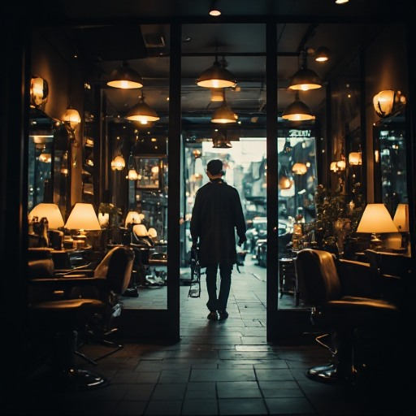
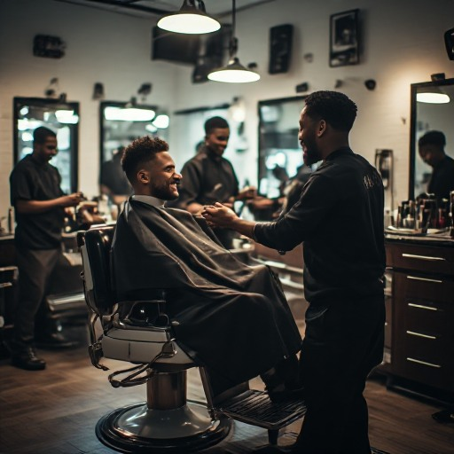
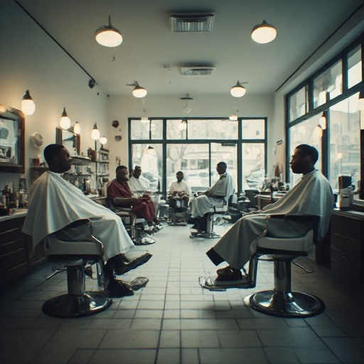
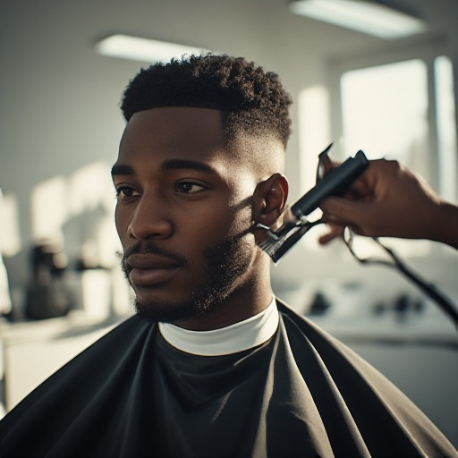
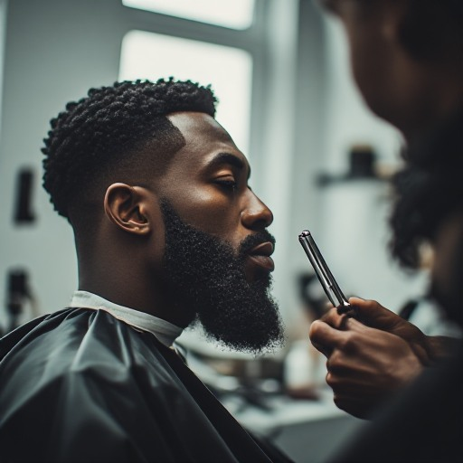
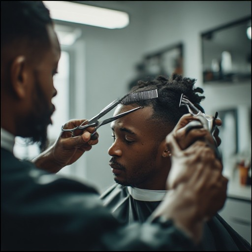
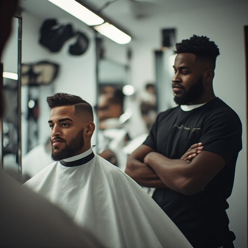
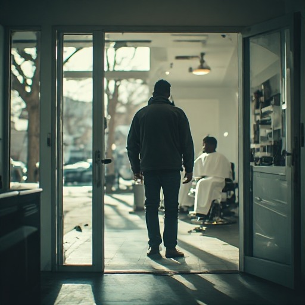
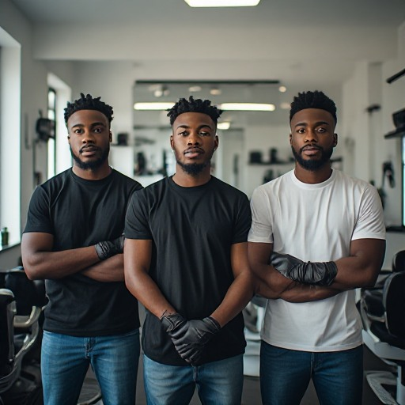

Arrival & First Cut

Shot 1 — The Entrance
Daytime. Camera picks client up at the sunlit door, tracks him toward the chair. Daylight streams through storefront. Shop ambience, low jazz.

Shot 2 — Settle In
He settles in, barber greets him, starts prepping tools. Cape on, tools laid out.
Shot 3 — Cut Begins
First pass with clippers. Close detail shots, hair falling, hands steady.
Shot 4 — Reflection
Mirror reflection, barber focused in. Eye contact, precision.
Multi-Chair Montage

Shot 5 — The Shop Alive
Bright daytime. Multiple barbers, multiple chairs, multiple clients, all working at once. Natural daylight, clean sharp look.

Shot 6 — Clippers
Clippers at one chair. Fade work, detail.

Shot 7 — Straight Razor
Straight razor at another. Slow, deliberate strokes.

Shot 8 — Comb-Out
A comb-out at a third. Finish and finesse. Give each barber a moment.
The Reveal
Shot 9 — Final Details
Back to original client. Cut finishing, final details, line-up, brush-off.

Shot 10 — Approval
He checks himself in the mirror. Slight nod or smirk. Satisfied.

Shot 11 — Walk Out
He gets up, walks out into bright daylight. Confidence. Hold on sunlit door.

Shot 12 — The Line-Up
All barbers line up together inside the shop, looking straight at camera. Jazz resolves.
Shop Logo / Tag Lands
LOGO ON BLACK • JAZZ RESOLVES • END.